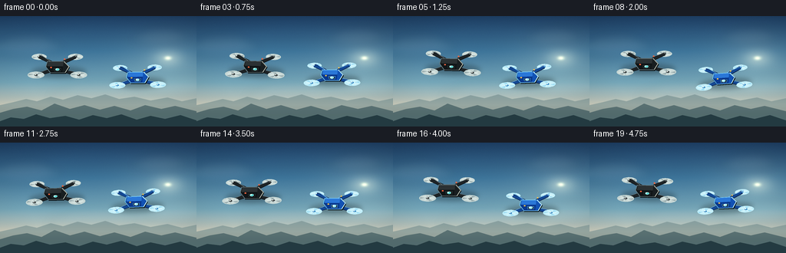
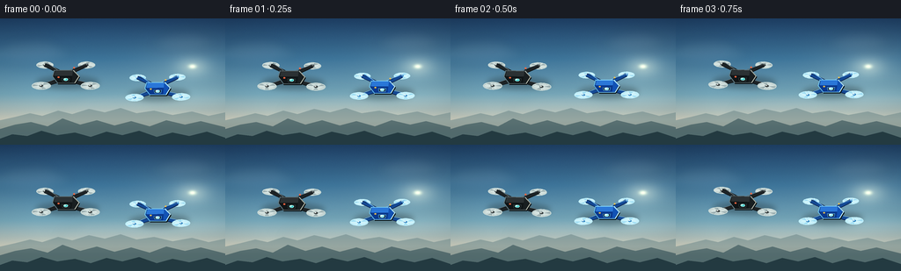
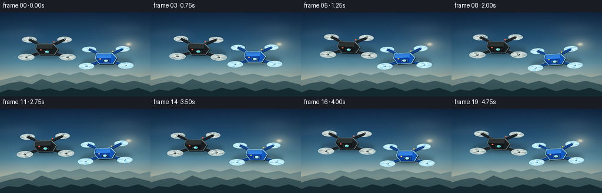
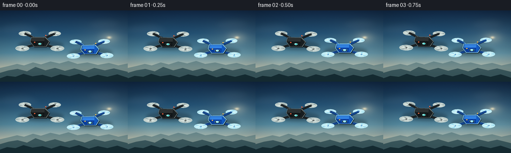

CODING AGENTS AS PIXEL WORLD MODELS
traex/DeepSeek-V4.1-Flash · instance_preservation_0043
点击播放 · 原生 RGB 像素
逐轮保存的候选
回放视频、检查图与代码变化。
每份候选均可单独播放。实际图片检查记录在下方工具轨迹中。
候选 01播放与检查图
点击播放 · 原生 RGB 像素


展开代码变化
--- 上一保存版本
+++ 本次保存版本
@@ -0,0 +1,384 @@
+"""Procedural RGB renderer for the two-drone text-to-video prompt."""
+
+from __future__ import annotations
+
+import math
+from pathlib import Path
+
+import numpy as np
+from PIL import Image, ImageDraw, ImageFilter
+
+import artifact_io
+
+
+WIDTH = 256
+HEIGHT = 144
+FRAMES = 20
+FPS = 4.0
+SS = 4
+CASE_DIR = Path(__file__).resolve().parent
+
+
+def mix(a, b, amount):
+ amount = max(0.0, min(1.0, amount))
+ return tuple(int(round(a[i] * (1.0 - amount) + b[i] * amount)) for i in range(3))
+
+
+def sky_image() -> Image.Image:
+ """Build a softly graded sunset sky with a warm sun glow."""
+ y = np.linspace(0.0, 1.0, HEIGHT * SS, dtype=np.float32)[:, None]
+ x = np.linspace(0.0, 1.0, WIDTH * SS, dtype=np.float32)[None, :]
+ stops = [
+ (0.00, (29, 62, 101)),
+ (0.32, (61, 116, 156)),
+ (0.60, (116, 166, 187)),
+ (0.80, (204, 209, 197)),
+ (1.00, (241, 197, 153)),
+ ]
+ rgb = np.empty((HEIGHT * SS, WIDTH * SS, 3), dtype=np.float32)
+ for channel in range(3):
+ positions = np.array([item[0] for item in stops], dtype=np.float32)
+ values = np.array([item[1][channel] for item in stops], dtype=np.float32)
+ rgb[:, :, channel] = np.interp(y[:, 0], positions, values)[:, None]
+
+ sx, sy = 0.855, 0.38
+ distance = np.sqrt(((x - sx) * 1.05) ** 2 + (y - sy) ** 2)
+ glow = np.exp(-(distance / 0.23) ** 2).astype(np.float32)
+ halo = np.exp(-(distance / 0.075) ** 2).astype(np.float32)
+ core = np.exp(-(distance / 0.018) ** 2).astype(np.float32)
+ for channel, tint in enumerate((1.0, 0.78, 0.47)):
+ rgb[:, :, channel] += glow * 24.0 * tint
+ rgb[:, :, channel] += halo * 58.0 * tint
+ rgb[:, :, channel] += core * 105.0 * tint
+
+ # Fixed fine grain keeps the broad sky gradient from looking synthetic.
+ rng = np.random.default_rng(17)
+ grain = rng.normal(0.0, 1.15, (HEIGHT * SS, WIDTH * SS, 1)).astype(np.float32)
+ rgb += grain
+
+ xx = (x - 0.5) * 1.18
+ yy = y - 0.52
+ vignette = 1.0 - 0.13 * np.clip((np.sqrt(xx * xx + yy * yy) - 0.42) / 0.55, 0.0, 1.0)
+ rgb *= vignette[:, :, None]
+ return Image.fromarray(np.clip(rgb, 0, 255).astype(np.uint8), "RGB")
+
+
+def cloud_layer(time_s: float) -> Image.Image:
+ """Render slow, translucent clouds behind the aircraft."""
+ layer = Image.new("RGBA", (WIDTH * SS, HEIGHT * SS), (0, 0, 0, 0))
+ draw = ImageDraw.Draw(layer, "RGBA")
+ drift = 1.5 * time_s
+ groups = [
+ (34.0, 39.0, 1.35, 20, -drift * 0.35),
+ (209.0, 27.0, 1.05, 16, -drift * 0.22),
+ (126.0, 101.0, 1.65, 12, -drift * 0.55),
+ (232.0, 91.0, 1.30, 18, -drift * 0.45),
+ ]
+ puffs = [
+ (-18, 2, 18, 6),
+ (-7, -3, 17, 7),
+ (5, -4, 20, 7),
+ (17, 1, 19, 6),
+ (-1, 5, 24, 5),
+ ]
+ for cx, cy, scale, alpha, offset in groups:
+ for px, py, prx, pry in puffs:
+ box = (
+ (cx + offset + px * scale - prx * scale) * SS,
+ (cy + py * scale - pry * scale) * SS,
+ (cx + offset + px * scale + prx * scale) * SS,
+ (cy + py * scale + pry * scale) * SS,
+ )
+ draw.ellipse(box, fill=(235, 241, 235, alpha))
+ layer = layer.filter(ImageFilter.GaussianBlur(6.2 * SS))
+ return layer
+
+
+def ridge_polygon(points):
+ return [(int(round(x * SS)), int(round(y * SS))) for x, y in points]
+
+
+def draw_landscape(image: Image.Image) -> Image.Image:
+ """Add atmospheric mountain ridges at the bottom of the frame."""
+ draw = ImageDraw.Draw(image, "RGBA")
+ far = [
+ (0, 116), (18, 112), (34, 108), (48, 111), (66, 105), (82, 109),
+ (101, 103), (119, 107), (137, 102), (155, 108), (175, 105),
+ (196, 110), (218, 106), (237, 111), (256, 107), (256, 144), (0, 144),
+ ]
+ mid = [
+ (0, 126), (17, 121), (35, 118), (54, 123), (71, 114), (91, 121),
+ (110, 116), (130, 122), (149, 117), (170, 123), (189, 116),
+ (210, 121), (228, 117), (256, 124), (256, 144), (0, 144),
+ ]
+ near = [
+ (0, 137), (14, 132), (31, 134), (47, 128), (65, 133), (85, 130),
+ (103, 135), (121, 129), (139, 133), (158, 128), (178, 135),
+ (196, 130), (215, 134), (235, 129), (256, 136), (256, 144), (0, 144),
+ ]
+ draw.polygon(ridge_polygon(far), fill=(119, 147, 151, 174))
+ draw.polygon(ridge_polygon(mid), fill=(65, 94, 101, 205))
+ draw.polygon(ridge_polygon(near), fill=(31, 54, 62, 235))
+
+ haze = Image.new("RGBA", image.size, (0, 0, 0, 0))
+ haze_draw = ImageDraw.Draw(haze, "RGBA")
+ haze_draw.rectangle((0, 108 * SS, WIDTH * SS, 124 * SS), fill=(229, 218, 196, 25))
+ haze = haze.filter(ImageFilter.GaussianBlur(7 * SS))
+ return Image.alpha_composite(image.convert("RGBA"), haze).convert("RGB")
+
+
+def transformed(points, cx, cy, scale, angle):
+ ca, sa = math.cos(angle), math.sin(angle)
+ result = []
+ for x, y in points:
+ x *= scale
+ y *= scale
+ result.append(((cx + x * ca - y * sa) * SS, (cy + x * sa + y * ca) * SS))
+ return result
+
+
+def ellipse_points(cx, cy, rx, ry, angle, count=40):
+ points = []
+ for index in range(count):
+ theta = 2.0 * math.pi * index / count
+ points.append((rx * math.cos(theta), ry * math.sin(theta)))
+ return transformed(points, cx, cy, 1.0, angle)
+
+
+def rotor_blade(cx, cy, rx, ry, angle, phase, blade):
+ theta = phase + blade * (2.0 * math.pi / 3.0)
+ local = [(0.0, 0.0), (rx * 0.88 * math.cos(theta), ry * 0.88 * math.sin(theta))]
+ return transformed(local, cx, cy, 1.0, angle)
+
+
+def draw_rotor(draw, cx, cy, rx, ry, angle, phase, palette, front):
+ disc = ellipse_points(cx, cy, rx, ry, angle)
+ ring = palette["rotor_ring"]
+ blade = palette["blade"]
+ if front:
+ ring = (*ring[:3], min(255, ring[3] + 22))
+ draw.polygon(disc, fill=palette["rotor_fill"], outline=ring, width=max(1, int(1.0 * SS)))
+
+ # Multiple faint blade positions imply fast rotation at only four frames per second.
+ for ghost in range(8):
+ ghost_phase = phase - ghost * 0.19
+ ghost_alpha = max(16, blade[3] - ghost * 12)
+ for arm in range(3):
+ line = rotor_blade(cx, cy, rx, ry, angle, ghost_phase, arm)
+ draw.line(line, fill=(*blade[:3], ghost_alpha), width=max(1, int(0.75 * SS)))
+ for arm in range(3):
+ line = rotor_blade(cx, cy, rx, ry, angle, phase, arm)
+ draw.line(line, fill=blade, width=max(1, int(1.2 * SS)))
+
+ hub = ellipse_points(cx, cy, 2.5, 1.55, angle)
+ draw.polygon(hub, fill=palette["hub"], outline=palette["hub_outline"], width=max(1, int(0.7 * SS)))
+ glint = ellipse_points(cx - 0.6, cy - 0.45, 0.9, 0.45, angle)
+ draw.polygon(glint, fill=palette["glint"])
+
+
+def draw_drone(
+ image: Image.Image,
+ cx: float,
+ cy: float,
+ scale: float,
+ angle: float,
+ phase: float,
+ palette: dict,
+) -> None:
+ """Draw a slightly three-quarter-view quadcopter with layered detail."""
+ shadow = Image.new("RGBA", image.size, (0, 0, 0, 0))
+ shadow_draw = ImageDraw.Draw(shadow, "RGBA")
+ shadow_poly = ellipse_points(cx + 2.0, cy + 7.0, 35 * scale, 7.2 * scale, angle, 48)
+ shadow_draw.polygon(shadow_poly, fill=(4, 13, 19, 72))
+ shadow = shadow.filter(ImageFilter.GaussianBlur(3.0 * SS))
+ image.alpha_composite(shadow)
+ draw = ImageDraw.Draw(image, "RGBA")
+
+ rotors = [
+ (-27.0, 10.5, 10.6, 4.35, False),
+ (27.0, 10.5, 10.6, 4.35, False),
+ (-23.0, -12.5, 9.5, 3.85, True),
+ (23.0, -12.5, 9.5, 3.85, True),
+ ]
+ # Rear propellers read as depth cues behind the body.
+ for rx, ry, erx, ery, _ in rotors[2:]:
+ wx, wy = transformed([(rx, ry)], cx, cy, scale, angle)[0]
+ draw_rotor(
+ draw, wx / SS, wy / SS, erx * scale, ery * scale, angle,
+ phase + 0.37, palette, front=False,
+ )
+
+ arm_color = palette["arm"]
+ arm_edge = palette["arm_edge"]
+ arm_highlight = palette["arm_highlight"]
+ arm_paths = [
+ ((-8, 5), (-27, 10.5)),
+ ((8, 5), (27, 10.5)),
+ ((-7, -5), (-23, -12.5)),
+ ((7, -5), (23, -12.5)),
+ ]
+ for p1, p2 in arm_paths:
+ start, end = transformed([p1, p2], cx, cy, scale, angle)
+ draw.line((start, end), fill=arm_edge, width=max(2, int(4.7 * SS)))
+ draw.line((start, end), fill=arm_color, width=max(2, int(3.4 * SS)))
+ # A narrow top edge makes the black aircraft readable against the sky.
+ offset = transformed([(-0.55, -0.55), (0.55, -0.55)], 0, 0, scale, angle)
+ draw.line(
+ ((start[0] + offset[0][0] * SS, start[1] + offset[0][1] * SS),
+ (end[0] + offset[1][0] * SS, end[1] + offset[1][1] * SS)),
+ fill=arm_highlight,
+ width=max(1, int(0.8 * SS)),
+ )
+
+ # Front rotor rings sit in front of the arms.
+ for rx, ry, erx, ery, _ in rotors[:2]:
+ wx, wy = transformed([(rx, ry)], cx, cy, scale, angle)[0]
+ draw_rotor(
+ draw, wx / SS, wy / SS, erx * scale, ery * scale, angle,
+ phase + 0.81, palette, front=True,
+ )
+
+ body_shadow = transformed(
+ [(-13, -7), (9, -7), (15, 0), (10, 8), (-9, 8), (-15, 0)],
+ cx + 0.7, cy + 1.0, scale, angle,
+ )
+ draw.polygon(body_shadow, fill=(2, 9, 13, 145))
+
+ body = transformed(
+ [(-13, -7), (9, -7), (15, 0), (10, 8), (-9, 8), (-15, 0)],
+ cx, cy, scale, angle,
+ )
+ draw.polygon(body, fill=palette["body_edge"], outline=palette["body_outline"], width=max(1, int(1.05 * SS)))
+
+ top = transformed(
+ [(-11.8, -6.2), (8.1, -6.2), (13.3, -0.4), (-13.2, -0.4)],
+ cx, cy, scale, angle,
+ )
+ draw.polygon(top, fill=palette["body_top"])
+ lower = transformed(
+ [(-13.2, -0.4), (13.3, -0.4), (10, 7.2), (-9, 7.2)],
+ cx, cy, scale, angle,
+ )
+ draw.polygon(lower, fill=palette["body_front"])
+ facet = transformed(
+ [(7.8, -6.0), (12.8, -0.5), (9.8, 7.0), (6.4, 7.1)],
+ cx, cy, scale, angle,
+ )
+ draw.polygon(facet, fill=palette["body_side"])
+
+ # Sun-side rim light and a small navigation light add material definition.
+ rim = transformed([(8.2, -6.8), (14.6, -0.2), (9.8, 7.4)], cx, cy, scale, angle)
+ draw.line(rim, fill=palette["rim"], width=max(1, int(1.0 * SS)))
+ cool_rim = transformed([(-12.8, -6.8), (-14.7, -0.1), (-8.9, 7.5)], cx, cy, scale, angle)
+ draw.line(cool_rim, fill=palette["cool_rim"], width=max(1, int(0.65 * SS)))
+
+ lens_box = transformed([(-4.4, 2.0), (4.4, 2.0), (3.8, 5.7), (-3.8, 5.7)], cx, cy, scale, angle)
+ draw.polygon(lens_box, fill=palette["lens_well"], outline=palette["lens_edge"], width=max(1, int(0.7 * SS)))
+ lens = ellipse_points(cx, cy + 3.55 * scale, 2.6 * scale, 1.45 * scale, angle)
+ draw.polygon(lens, fill=palette["lens"], outline=palette["lens_outline"], width=max(1, int(0.55 * SS)))
+ lens_glint = ellipse_points(cx - 0.7 * scale, cy + 3.15 * scale, 0.85 * scale, 0.45 * scale, angle)
+ draw.polygon(lens_glint, fill=palette["lens_glint"])
+
+ led = ellipse_points(cx - 8.0 * scale, cy + 1.0 * scale, 1.1 * scale, 0.8 * scale, angle)
+ draw.polygon(led, fill=palette["led"])
+ antenna = transformed([(8.0, -6.5), (9.2, -9.5)], cx, cy, scale, angle)
+ draw.line(antenna, fill=palette["arm_edge"], width=max(1, int(0.65 * SS)))
+ tip = ellipse_points(cx + 9.2 * scale, cy - 9.5 * scale, 0.9 * scale, 0.9 * scale, angle)
+ draw.polygon(tip, fill=palette["led"])
+
+
+BLACK_PALETTE = {
+ "arm_edge": (12, 18, 22, 255),
+ "arm": (29, 35, 39, 255),
+ "arm_highlight": (96, 111, 117, 180),
+ "rotor_fill": (153, 174, 179, 28),
+ "rotor_ring": (199, 218, 220, 92),
+ "blade": (210, 226, 228, 145),
+ "hub": (42, 49, 52, 255),
+ "hub_outline": (154, 171, 174, 190),
+ "glint": (231, 240, 238, 210),
+ "body_edge": (7, 12, 15, 255),
+ "body_outline": (92, 107, 112, 210),
+ "body_top": (43, 49, 52, 255),
+ "body_front": (16, 21, 24, 255),
+ "body_side": (24, 30, 33, 255),
+ "rim": (171, 178, 168, 205),
+ "cool_rim": (100, 135, 150, 150),
+ "lens_well": (3, 7, 9, 255),
+ "lens_edge": (60, 76, 80, 210),
+ "lens": (50, 201, 207, 255),
+ "lens_outline": (187, 249, 241, 210),
+ "lens_glint": (236, 255, 247, 230),
+ "led": (255, 103, 66, 255),
+}
+
+BLUE_PALETTE = {
+ "arm_edge": (7, 25, 66, 255),
+ "arm": (20, 73, 151, 255),
+ "arm_highlight": (105, 179, 244, 195),
+ "rotor_fill": (157, 220, 247, 35),
+ "rotor_ring": (190, 239, 255, 128),
+ "blade": (205, 243, 255, 185),
+ "hub": (49, 133, 197, 255),
+ "hub_outline": (204, 242, 255, 220),
+ "glint": (241, 253, 255, 235),
+ "body_edge": (8, 40, 103, 255),
+ "body_outline": (122, 205, 252, 225),
+ "body_top": (42, 119, 220, 255),
+ "body_front": (10, 56, 144, 255),
+ "body_side": (18, 82, 183, 255),
+ "rim": (183, 233, 255, 225),
+ "cool_rim": (81, 175, 236, 190),
+ "lens_well": (2, 18, 45, 255),
+ "lens_edge": (104, 200, 241, 225),
+ "lens": (123, 239, 255, 255),
+ "lens_outline": (224, 255, 255, 235),
+ "lens_glint": (255, 255, 255, 245),
+ "led": (255, 194, 82, 255),
+}
+
+
+def add_atmosphere(image: Image.Image) -> Image.Image:
+ """Finish with a restrained grade and an edge falloff."""
+ rgb = np.asarray(image.convert("RGB"), dtype=np.float32)
+ rgb[:, :, 0] *= 1.015
+ rgb[:, :, 1] *= 1.005
+ rgb[:, :, 2] *= 0.985
+ return Image.fromarray(np.clip(rgb, 0, 255).astype(np.uint8), "RGB")
+
+
+def render_frame(index: int) -> np.ndarray:
+ t = index / FPS
+ base = sky_image().convert("RGBA")
+ clouds = cloud_layer(t)
+ image = Image.alpha_composite(base, clouds).convert("RGB")
+ image = draw_landscape(image).convert("RGBA")
+
+ black_x = 74.0 + 2.2 * math.sin(2.0 * math.pi * t / 4.6 + 0.35)
+ black_y = 64.0 + 2.8 * math.sin(2.0 * math.pi * t / 2.65 + 0.8)
+ black_angle = math.radians(1.5 * math.sin(2.0 * math.pi * t / 3.8))
+ blue_x = 177.0 + 2.7 * math.sin(2.0 * math.pi * t / 4.1 + 2.2)
+ blue_y = 79.0 + 2.4 * math.sin(2.0 * math.pi * t / 2.25 + 2.9)
+ blue_angle = math.radians(-2.0 + 1.8 * math.sin(2.0 * math.pi * t / 3.2 + 0.7))
+
+ draw_drone(
+ image, black_x, black_y, 1.03, black_angle,
+ phase=t * 18.3, palette=BLACK_PALETTE,
+ )
+ draw_drone(
+ image, blue_x, blue_y, 0.98, blue_angle,
+ phase=t * 21.7 + 1.2, palette=BLUE_PALETTE,
+ )
+
+ image = add_atmosphere(image.convert("RGB"))
+ return np.asarray(image.resize((WIDTH, HEIGHT), Image.Resampling.LANCZOS), dtype=np.uint8)
+
+
+def main() -> None:
+ frames = np.stack([render_frame(index) for index in range(FRAMES)], axis=0)
+ artifact_io.save(frames, CASE_DIR)
+ print(f"saved {frames.shape} frames to {CASE_DIR}")
+
+
+if __name__ == "__main__":
+ main()
候选 02播放与检查图
点击播放 · 原生 RGB 像素

展开代码变化
--- 上一保存版本
+++ 本次保存版本
@@ -29,11 +29,11 @@
y = np.linspace(0.0, 1.0, HEIGHT * SS, dtype=np.float32)[:, None]
x = np.linspace(0.0, 1.0, WIDTH * SS, dtype=np.float32)[None, :]
stops = [
- (0.00, (29, 62, 101)),
- (0.32, (61, 116, 156)),
- (0.60, (116, 166, 187)),
- (0.80, (204, 209, 197)),
- (1.00, (241, 197, 153)),
+ (0.00, (16, 39, 69)),
+ (0.32, (34, 79, 116)),
+ (0.60, (82, 135, 160)),
+ (0.80, (177, 190, 181)),
+ (1.00, (235, 178, 127)),
]
rgb = np.empty((HEIGHT * SS, WIDTH * SS, 3), dtype=np.float32)
for channel in range(3):
@@ -46,9 +46,9 @@
glow = np.exp(-(distance / 0.23) ** 2).astype(np.float32)
halo = np.exp(-(distance / 0.075) ** 2).astype(np.float32)
core = np.exp(-(distance / 0.018) ** 2).astype(np.float32)
- for channel, tint in enumerate((1.0, 0.78, 0.47)):
- rgb[:, :, channel] += glow * 24.0 * tint
- rgb[:, :, channel] += halo * 58.0 * tint
+ for channel, tint in enumerate((1.0, 0.72, 0.38)):
+ rgb[:, :, channel] += glow * 19.0 * tint
+ rgb[:, :, channel] += halo * 48.0 * tint
rgb[:, :, channel] += core * 105.0 * tint
# Fixed fine grain keeps the broad sky gradient from looking synthetic.
@@ -58,7 +58,7 @@
xx = (x - 0.5) * 1.18
yy = y - 0.52
- vignette = 1.0 - 0.13 * np.clip((np.sqrt(xx * xx + yy * yy) - 0.42) / 0.55, 0.0, 1.0)
+ vignette = 1.0 - 0.22 * np.clip((np.sqrt(xx * xx + yy * yy) - 0.42) / 0.55, 0.0, 1.0)
rgb *= vignette[:, :, None]
return Image.fromarray(np.clip(rgb, 0, 255).astype(np.uint8), "RGB")
@@ -69,10 +69,10 @@
draw = ImageDraw.Draw(layer, "RGBA")
drift = 1.5 * time_s
groups = [
- (34.0, 39.0, 1.35, 20, -drift * 0.35),
- (209.0, 27.0, 1.05, 16, -drift * 0.22),
- (126.0, 101.0, 1.65, 12, -drift * 0.55),
- (232.0, 91.0, 1.30, 18, -drift * 0.45),
+ (34.0, 39.0, 1.35, 14, -drift * 0.35),
+ (209.0, 27.0, 1.05, 11, -drift * 0.22),
+ (126.0, 101.0, 1.65, 9, -drift * 0.55),
+ (232.0, 91.0, 1.30, 12, -drift * 0.45),
]
puffs = [
(-18, 2, 18, 6),
@@ -89,7 +89,7 @@
(cx + offset + px * scale + prx * scale) * SS,
(cy + py * scale + pry * scale) * SS,
)
- draw.ellipse(box, fill=(235, 241, 235, alpha))
+ draw.ellipse(box, fill=(218, 230, 228, alpha))
layer = layer.filter(ImageFilter.GaussianBlur(6.2 * SS))
return layer
@@ -116,13 +116,13 @@
(103, 135), (121, 129), (139, 133), (158, 128), (178, 135),
(196, 130), (215, 134), (235, 129), (256, 136), (256, 144), (0, 144),
]
- draw.polygon(ridge_polygon(far), fill=(119, 147, 151, 174))
- draw.polygon(ridge_polygon(mid), fill=(65, 94, 101, 205))
- draw.polygon(ridge_polygon(near), fill=(31, 54, 62, 235))
+ draw.polygon(ridge_polygon(far), fill=(82, 118, 128, 175))
+ draw.polygon(ridge_polygon(mid), fill=(40, 72, 83, 215))
+ draw.polygon(ridge_polygon(near), fill=(18, 39, 48, 240))
haze = Image.new("RGBA", image.size, (0, 0, 0, 0))
haze_draw = ImageDraw.Draw(haze, "RGBA")
- haze_draw.rectangle((0, 108 * SS, WIDTH * SS, 124 * SS), fill=(229, 218, 196, 25))
+ haze_draw.rectangle((0, 108 * SS, WIDTH * SS, 124 * SS), fill=(220, 207, 182, 18))
haze = haze.filter(ImageFilter.GaussianBlur(7 * SS))
return Image.alpha_composite(image.convert("RGBA"), haze).convert("RGB")
@@ -285,6 +285,15 @@
draw.line(antenna, fill=palette["arm_edge"], width=max(1, int(0.65 * SS)))
tip = ellipse_points(cx + 9.2 * scale, cy - 9.5 * scale, 0.9 * scale, 0.9 * scale, angle)
draw.polygon(tip, fill=palette["led"])
+
+ # Subtle atmospheric rim on the body keeps the dark drone legible at low resolution.
+ halo = Image.new("RGBA", image.size, (0, 0, 0, 0))
+ halo_draw = ImageDraw.Draw(halo, "RGBA")
+ halo_draw.polygon(body, outline=palette["outer_glow"], width=max(2, int(2.0 * SS)))
+ halo = halo.filter(ImageFilter.GaussianBlur(2.0 * SS))
+ image.alpha_composite(halo)
+ draw = ImageDraw.Draw(image, "RGBA")
+ draw.polygon(body, outline=palette["body_outline"], width=max(1, int(0.85 * SS)))
BLACK_PALETTE = {
@@ -310,6 +319,7 @@
"lens_outline": (187, 249, 241, 210),
"lens_glint": (236, 255, 247, 230),
"led": (255, 103, 66, 255),
+ "outer_glow": (172, 198, 204, 80),
}
BLUE_PALETTE = {
@@ -323,10 +333,10 @@
"hub_outline": (204, 242, 255, 220),
"glint": (241, 253, 255, 235),
"body_edge": (8, 40, 103, 255),
- "body_outline": (122, 205, 252, 225),
- "body_top": (42, 119, 220, 255),
- "body_front": (10, 56, 144, 255),
- "body_side": (18, 82, 183, 255),
+ "body_outline": (152, 224, 255, 235),
+ "body_top": (49, 132, 236, 255),
+ "body_front": (9, 62, 164, 255),
+ "body_side": (18, 92, 204, 255),
"rim": (183, 233, 255, 225),
"cool_rim": (81, 175, 236, 190),
"lens_well": (2, 18, 45, 255),
@@ -335,15 +345,16 @@
"lens_outline": (224, 255, 255, 235),
"lens_glint": (255, 255, 255, 245),
"led": (255, 194, 82, 255),
+ "outer_glow": (109, 188, 235, 100),
}
def add_atmosphere(image: Image.Image) -> Image.Image:
"""Finish with a restrained grade and an edge falloff."""
rgb = np.asarray(image.convert("RGB"), dtype=np.float32)
- rgb[:, :, 0] *= 1.015
+ rgb[:, :, 0] *= 1.025
rgb[:, :, 1] *= 1.005
- rgb[:, :, 2] *= 0.985
+ rgb[:, :, 2] *= 0.975
return Image.fromarray(np.clip(rgb, 0, 255).astype(np.uint8), "RGB")
@@ -354,19 +365,19 @@
image = Image.alpha_composite(base, clouds).convert("RGB")
image = draw_landscape(image).convert("RGBA")
- black_x = 74.0 + 2.2 * math.sin(2.0 * math.pi * t / 4.6 + 0.35)
- black_y = 64.0 + 2.8 * math.sin(2.0 * math.pi * t / 2.65 + 0.8)
+ black_x = 79.0 + 2.4 * math.sin(2.0 * math.pi * t / 4.6 + 0.35)
+ black_y = 61.0 + 2.8 * math.sin(2.0 * math.pi * t / 2.65 + 0.8)
black_angle = math.radians(1.5 * math.sin(2.0 * math.pi * t / 3.8))
- blue_x = 177.0 + 2.7 * math.sin(2.0 * math.pi * t / 4.1 + 2.2)
- blue_y = 79.0 + 2.4 * math.sin(2.0 * math.pi * t / 2.25 + 2.9)
+ blue_x = 178.0 + 2.9 * math.sin(2.0 * math.pi * t / 4.1 + 2.2)
+ blue_y = 78.0 + 2.4 * math.sin(2.0 * math.pi * t / 2.25 + 2.9)
blue_angle = math.radians(-2.0 + 1.8 * math.sin(2.0 * math.pi * t / 3.2 + 0.7))
draw_drone(
- image, black_x, black_y, 1.03, black_angle,
+ image, black_x, black_y, 1.30, black_angle,
phase=t * 18.3, palette=BLACK_PALETTE,
)
draw_drone(
- image, blue_x, blue_y, 0.98, blue_angle,
+ image, blue_x, blue_y, 1.24, blue_angle,
phase=t * 21.7 + 1.2, palette=BLUE_PALETTE,
)
候选 03播放与检查图
点击播放 · 原生 RGB 像素

展开代码变化
--- 上一保存版本
+++ 本次保存版本
@@ -60,7 +60,7 @@
yy = y - 0.52
vignette = 1.0 - 0.22 * np.clip((np.sqrt(xx * xx + yy * yy) - 0.42) / 0.55, 0.0, 1.0)
rgb *= vignette[:, :, None]
- return Image.fromarray(np.clip(rgb, 0, 255).astype(np.uint8), "RGB")
+ return Image.fromarray(np.clip(rgb, 0, 255).astype(np.uint8))
def cloud_layer(time_s: float) -> Image.Image:
@@ -355,7 +355,7 @@
rgb[:, :, 0] *= 1.025
rgb[:, :, 1] *= 1.005
rgb[:, :, 2] *= 0.975
- return Image.fromarray(np.clip(rgb, 0, 255).astype(np.uint8), "RGB")
+ return Image.fromarray(np.clip(rgb, 0, 255).astype(np.uint8))
def render_frame(index: int) -> np.ndarray:
可观测工具轨迹
实际执行的命令与返回图片。
命令 1exit 0
/bin/bash -c "pwd && rg --files -g '"'!*.pyc'"' -g '"'!__pycache__'"' | sed -n '1,200p'"
命令 2exit 0
/bin/bash -c "sed -n '1,240p' prompt.txt"
命令 3exit 0
/bin/bash -c "sed -n '1,280p' GENERATION_RULES.md"
命令 4exit 0
/bin/bash -c 'cat task_spec.json'
命令 5exit 0
/bin/bash -c "sed -n '1,280p' artifact_io.py"
命令 6exit 0
/bin/bash -c "sed -n '1,260p' player_template.html"
命令 7exit 0
/bin/bash -c "python - <<'PY' import importlib.util for m in ['numpy','PIL','cv2','imageio','matplotlib','scipy']: print(m, bool(importlib.util.find_spec(m))) PY"
命令 8exit 0
/bin/bash -c 'python generate.py'
命令 9exit 0
/bin/bash -c 'command -v chafa || true; command -v viu || true; command -v jp2 || true; command -v img2txt || true'
命令 10exit 0
/bin/bash -c "python - <<'PY'
from PIL import Image
import numpy as np
for name in ['inspection.png','transition_check.png']:
im=Image.open(name)
print(name, im.size, im.mode)
frames=[]
for i in [0,5,10,15,19]:
im=np.asarray(Image.open(f'frames/{i:02d}.png'))
print(i, im.shape, im.dtype, im.min(), im.max(), im.mean(axis=(0,1)).round(2))
PY"命令 11exit 0
/bin/bash -c "python - <<'PY'
from PIL import Image
im=Image.open('frames/00.png')
# ANSI truecolor half-block preview: two image rows per terminal row.
im=im.resize((64,36), Image.Resampling.LANCZOS)
a=im.load()
for y in range(0,36,2):
line=[]
for x in range(64):
r1,g1,b1=a[x,y]; r2,g2,b2=a[x,y+1]
line.append(f'\\x1b[38;2;{r1};{g1};{b1}m\\x1b[48;2;{r2};{g2};{b2}mâ')
print(''.join(line)+'\\x1b[0m')
PY"命令 12exit 0
/bin/bash -c "python - <<'PY'
from PIL import Image, ImageDraw, ImageFont
import numpy as np
im=Image.open('frames/00.png').resize((1024,576), Image.Resampling.NEAREST)
d=ImageDraw.Draw(im)
for x in range(0,257,16):
d.line((x*4,0,x*4,575), fill=(255,255,255,40), width=1)
d.text((x*4+2,2),str(x),fill='white')
for y in range(0,145,16):
d.line((0,y*4,1023,y*4), fill=(255,255,255,40), width=1)
d.text((2,y*4+2),str(y),fill='white')
im.save('.tmp/grid.png')
PY"命令 13exit 0
/bin/bash -c "python - <<'PY'
from PIL import Image
import numpy as np, cv2
im=np.asarray(Image.open('frames/00.png')).astype(np.float32)
g=cv2.cvtColor(im.astype(np.uint8),cv2.COLOR_RGB2GRAY).astype(np.float32)
base=cv2.GaussianBlur(g,(0,0),5)
r=np.abs(g-base)
r=(r-r.min())/(r.max()-r.min()+1e-6)
chars=' .:-=+*#%@'
for row in r:
s=''.join(chars[min(len(chars)-1,int(v*(len(chars)-1)))] for v in row[::4])
print(s)
PY"命令 14exit 0
/bin/bash -c "python - <<'PY'
from PIL import Image
import numpy as np
im=np.asarray(Image.open('frames/00.png'))
def show(box):
x0,y0,x1,y1=box
a=im[y0:y1,x0:x1]
for y in range(0,a.shape[0],2):
s=''
for x in range(0,a.shape[1],2):
p=a[y:y+2,x:x+2].mean((0,1)); r,g,b=p
lum=.2126*r+.7152*g+.0722*b
if lum<30:c='#'
elif lum<55:c='@'
elif lum<80:c='%'
elif lum<105:c='O'
elif lum<130:c='o'
elif lum<155:c=':'
elif lum<180:c='.'
elif lum<205:c='-'
elif lum<230:c='+'
else:c=' '
if b-r>35 and b>100:c='B'
if r-b>35 and r>120:c='R'
s+=c
print(s)
print('BLACK crop x45..105 y35..100')
show((45,35,110,105))
print('BLUE crop x145..215 y45..115')
show((145,45,215,115))
PY"命令 15exit 0
/bin/bash -c 'python generate.py'
命令 16exit 0
/bin/bash -c "python - <<'PY'
from PIL import Image
import numpy as np
im=np.asarray(Image.open('frames/00.png'))
for title,(x0,y0,x1,y1) in [('BLACK',(34,28,125,96)),('BLUE',(135,42,225,112))]:
print('\\n'+title)
a=im[y0:y1,x0:x1]
for y in range(0,a.shape[0],2):
s=''
for x in range(0,a.shape[1],2):
p=a[y:y+2,x:x+2].mean((0,1)); r,g,b=p
lum=.2126*r+.7152*g+.0722*b
if b-r>45 and b>100:c='B'
elif r-b>35 and r>120:c='R'
elif lum<25:c='#'
elif lum<45:c='@'
elif lum<65:c='%'
elif lum<85:c='O'
elif lum<105:c='o'
elif lum<125:c=':'
elif lum<145:c='.'
elif lum<170:c='-'
elif lum<200:c='+'
else:c=' '
s+=c
print(s)
PY"命令 17exit 0
/bin/bash -c "python - <<'PY'
from PIL import Image
import numpy as np
frames=np.stack([np.asarray(Image.open(f'frames/{i:02d}.png')).astype(np.int16) for i in range(20)])
d=np.abs(np.diff(frames,axis=0))
print('frame shape:', frames.shape)
print('per-transition mean abs diff:', np.round(d.mean(axis=(1,2,3)),2).tolist())
print('per-transition changed pixels (>8 any channel):', [int(np.any(np.abs(frames[i+1]-frames[i])>8,axis=2).sum()) for i in range(19)])
print('unique frame hashes:', len({hash(f.tobytes()) for f in frames}))
print('channel ranges:', [(int(frames[:,:,:,c].min()),int(frames[:,:,:,c].max())) for c in range(3)])
PY"命令 18exit 1
/bin/bash -c "python - <<'PY'
from pathlib import Path
import json, numpy as np
from PIL import Image
p=Path('pixels.npz'); z=np.load(p)
print('npz keys:', z.files, 'pixels:', z['pixels'].shape, z['pixels'].dtype)
packed=z['pixels']
arr=np.stack([(packed>>16)&255,(packed>>8)&255,packed&255],axis=-1).transpose(2,1,0)
disk=np.stack([np.asarray(Image.open(f'frames/{i:02d}.png')) for i in range(20)])
print('npz matches png frames:', np.array_equal(arr,disk))
html=Path('index.html').read_text()
print('html bytes:', len(html), 'ready hook:', '__pixelReady' in html, 'data payload:', 'const DATA={' in html)
print('artifact files:', sorted(x.name for x in Path('.').iterdir() if x.is_file()))
PY"命令 19exit 0
/bin/bash -c 'python -m py_compile generate.py && git status --short 2>/dev/null || true'
命令 20exit 0
/bin/bash -c "python - <<'PY'
from PIL import Image
import numpy as np
for idx in [0,10]:
a=np.asarray(Image.open(f'frames/{idx:02d}.png')).astype(float)
print(f'\\nframe {idx}')
for y in range(0,144,4):
s=''
for x in range(0,256,4):
p=a[y:y+4,x:x+4].mean((0,1)); r,g,b=p; lum=.2126*r+.7152*g+.0722*b
if b-r>60 and b>120 and g>70: c='B'
elif lum<40: c='#'
elif lum<65: c='@'
elif y>108 and lum<110: c='_'
elif lum>200: c=' '
elif lum>160: c='.'
elif lum>125: c=':'
else: c='-'
s+=c
print(s)
PY"命令 21exit 0
/bin/bash -c "python - <<'PY'
from pathlib import Path
import numpy as np
from PIL import Image
z=np.load('pixels.npz')
packed=z['pixels']
arr=np.stack([(packed>>16)&255,(packed>>8)&255,packed&255],axis=-1).transpose(2,0,1,3)
disk=np.stack([np.asarray(Image.open(f'frames/{i:02d}.png')) for i in range(20)])
print('decoded pixels:', arr.shape, arr.dtype)
print('matches frames:', np.array_equal(arr,disk))
print('html bytes:', Path('index.html').stat().st_size)
print('inspection sheet:', Image.open('inspection.png').size)
print('transition sheet:', Image.open('transition_check.png').size)
print('all finite and expected:', np.isfinite(disk).all() and disk.shape==(20,144,256,3))
PY"命令 22exit 0
/bin/bash -c 'python generate.py'
命令 23exit 0
/bin/bash -c "python -m py_compile generate.py && python - <<'PY'
from pathlib import Path
import numpy as np
from PIL import Image
z=np.load('pixels.npz')
p=z['pixels']
a=np.stack([(p>>16)&255,(p>>8)&255,p&255],-1).transpose(2,0,1,3)
d=np.stack([np.asarray(Image.open(f'frames/{i:02d}.png')) for i in range(20)])
assert d.shape==(20,144,256,3) and d.dtype==np.uint8
assert np.array_equal(a,d)
assert len({f.tobytes() for f in d})==20
assert Path('index.html').stat().st_size>100000
print('validated:', d.shape, 'unique frames:', len({f.tobytes() for f in d}), 'html:', Path('index.html').stat().st_size, 'bytes')
PY"保存候选 3 份；完成命令 23 次；可验证图片返回 0 张。原始 API 响应与完整日志保留在本地。